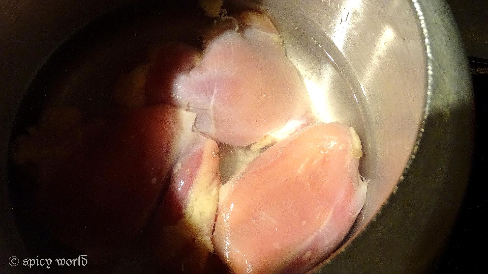
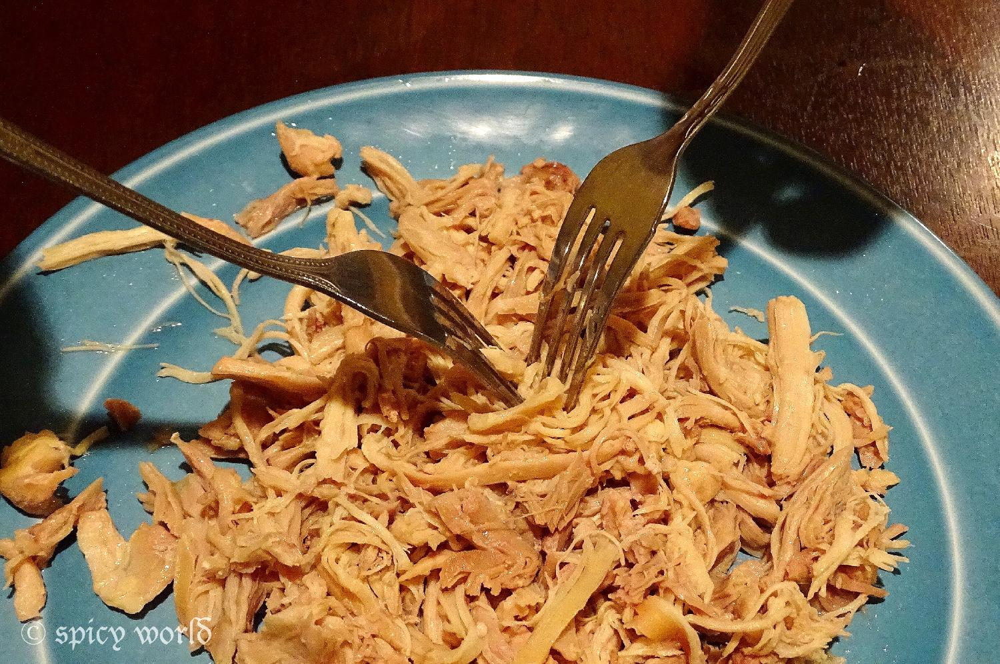
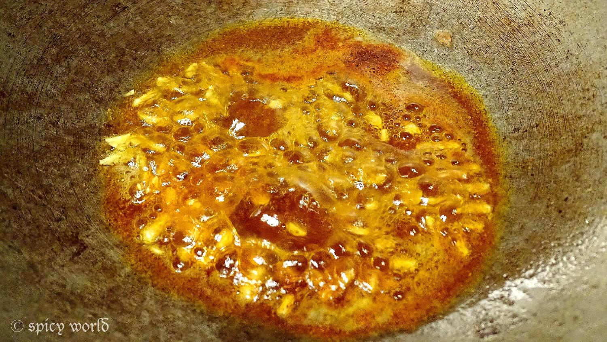
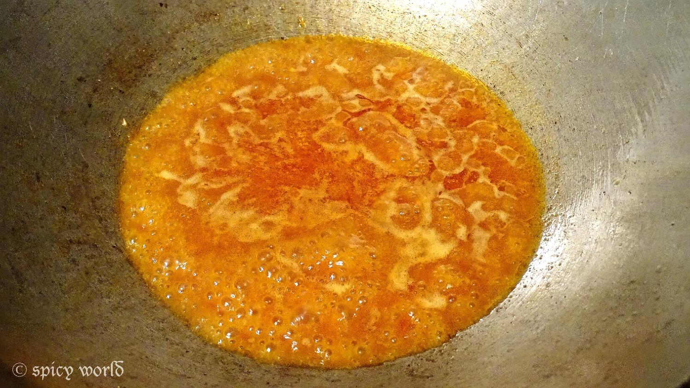
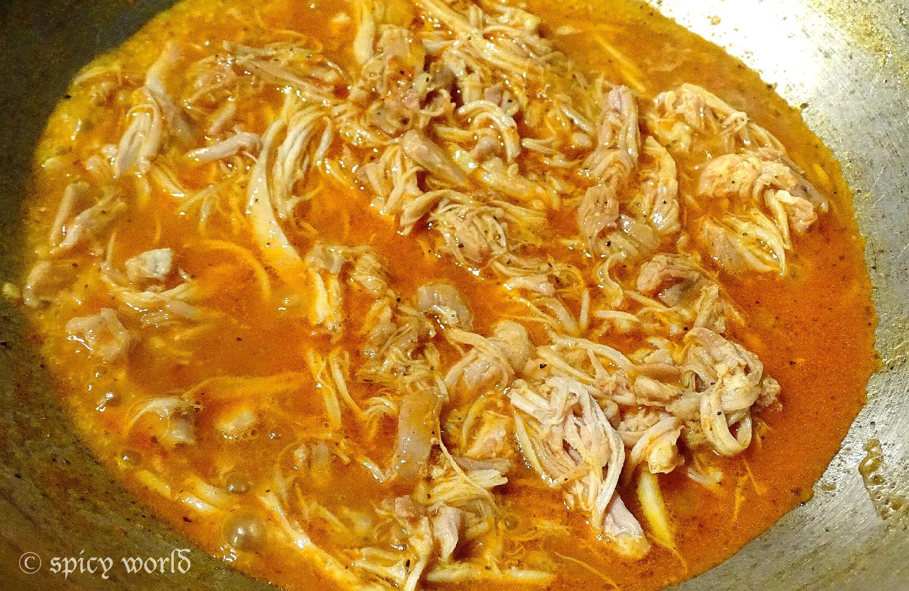
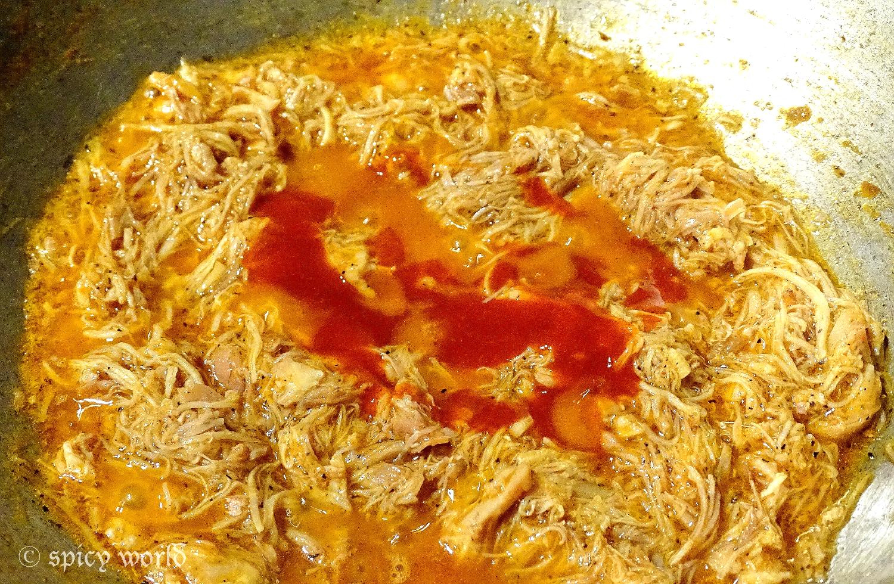
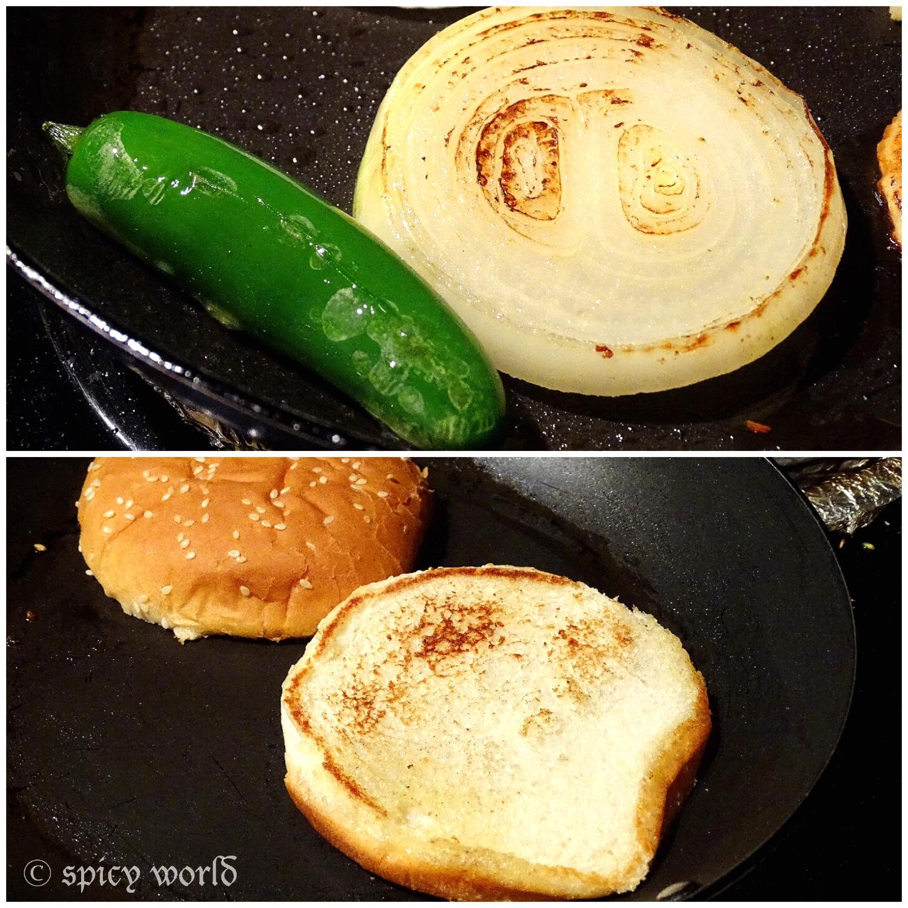
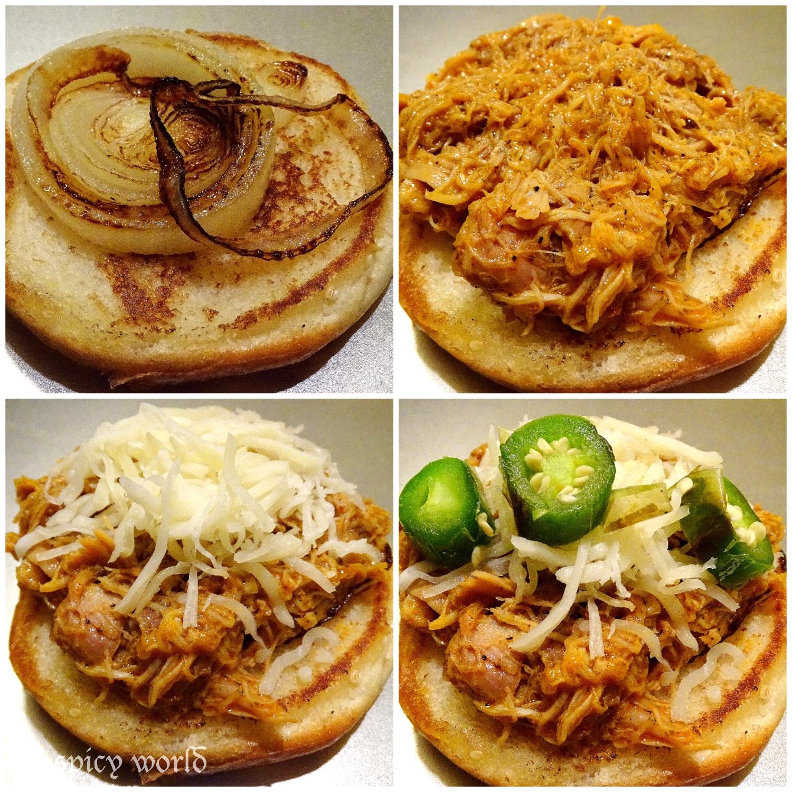

Latest Recipe
Pulled Chicken Burger

Here in Texas, one of the famous burger is 'pulled pork burger'. Everyone is a big fan of this burger. Last weekend I had some buns in my kitchen and some boneless chicken in my fridge. Then I thought to replace pork with chicken and some delicious 'pulled chicken burger's along with coke came out from my kitchen. I really love to make different types of burger but this one is my first posting on burger. I will post others soon. Try this easy peasy burger in your kitchen and make your weekend dinner a easy special one.

Ingredients
- 3 breast pieces of chicken.
- 4 burger buns.
- Some onion rings.
- 1 jalapeño (optional).
- 1 Teaspoon of chopped garlic.
- 1 Teaspoon paprika powder.
- 2 Teaspoons black pepper powder.
- 4 tablespoons of tomato sauce.
- 4 tablespoons of chilli sauce.
- Some italian seasoning.
- Shredded cheese.
- 3 to 4 Teaspoons of white oil.
- Salt.
- Water.

Steps
Boil the chicken with a cup of water in a pressure cooker untill it becomes fully tendor.

Let it cool down a bit.
Place only the chicken pieces in a plate and with the help of two forks, finely shred the chicken. Because of this shredding process, they named it 'pulled'.

Heat oil in a pan.
Add chopped garlic, paprika and black pepper powder. Mix it for a while.

Then add some chicken stock.mix it.
Let it boil.

Add the shredded chicken and some salt. Mix it well.

Then add italian seasoning, tomato and chilli sauce. Mix them really well.
Adjust salt and heat according to your taste.

Turn off the gas.
Don't make the filling too runny. It should be little juicy.
Now heat another pan with little oil.
Put the onion rings and jalapeño in hot pan. Toast them from both sides.
Then keep them aside.
Put some more oil and toast the burger buns from both sides well.

Now its time to arrange some burgers ...
First put some grilled onion, then some hot chicken mixture, then shredded cheese and lastly put 2-3 jalapeño.
Close them with another bun and take a bite.

Your pulled chicken burger is ready ...
- Enjoy this hot with some french fries and coke ...

Latest Recipe


Leave Your Comments